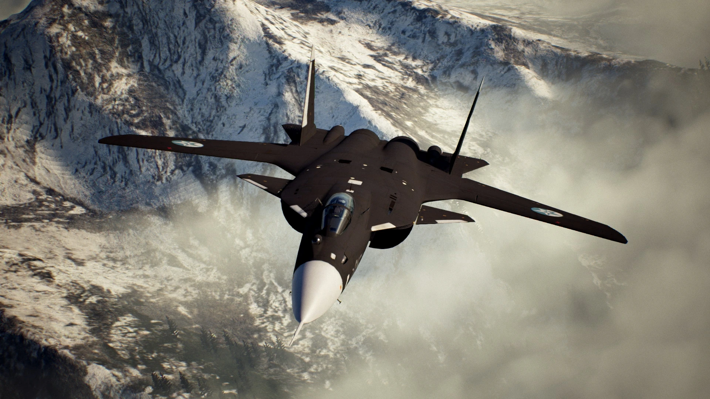
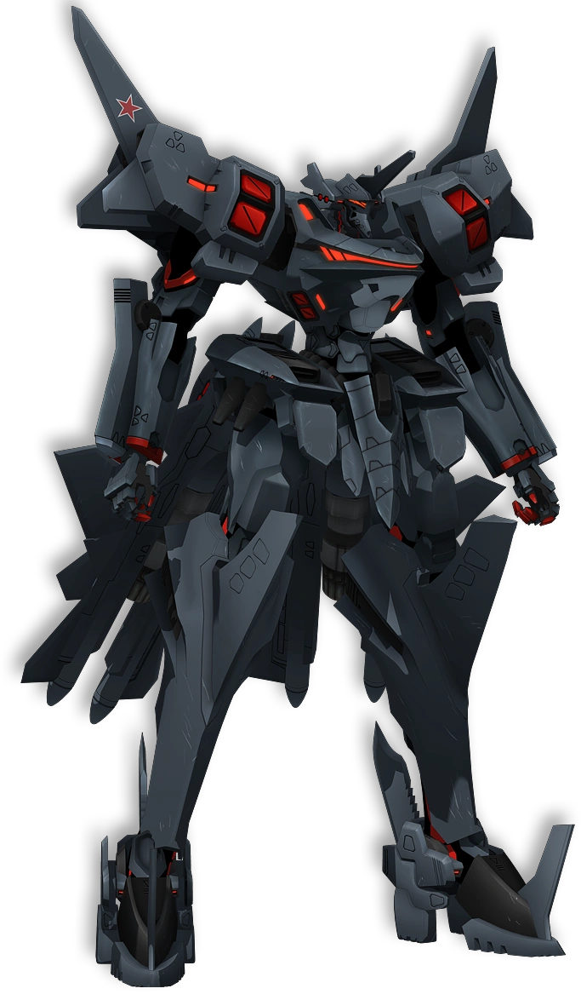

| Descrição | |
|---|---|
| Função: | Avião Experimental/Tecnologia de Demonstração |
| Local de Origem: | Federação Russa |
| Fabricante: | Sukhoi |
| Primeiro Voo: | 25 de Setembro de 1997 |
| Introduzido em: | Não Introduzido |
| Status: | Cancelado |
| Utilziadores: | Federação Russa |
| Produzido: | Não Prodeuzido em Larga Escala |
| Caractersiticas Gerais | |
| Tripulação: | 1 |
| Comprimento: | 22.6m |
| Altura: | 6.4m |
| Envergadura das Asas: | 16.7m |
| Area das Asas: | 56m² |
| Peso Vazio: | Não Disponivel ao Publico |
| Peso Bruto: | 25.670kg |
| Peso Máximo de Decolagem: | 34.000kg |
| Capacidade de Combustivel: | Não Disponivel ao Publico |
| Performace | |
| Motores: | 2 x Soloviev D-30F6 Turbofan Afterburnig |
| Empuxo: |
|
| Velocidade Máxima: | Mach 2.21 ou 2.200km/h |
| Alcance: | 3.300km |
| Alcance de Combate: | Não Disponivel ao Publico |
| Armamento | |
| Armas: | Não Disponivel ao Publico |
| Hardpoint | Não Disponivel ao Publico |
| Misseis |
Ar-Ar:
Ar-Terra:
|
Conhecidamente como Sukhoi Su-47 Berkut, ele é um caça supersonic experimental russo desevolvido pela JSC Sukhoi Company, sneod que as suas asas são em
formado de enflechamento negativo, que tal formado garante uma agilidae e manobrabilidade avantajada contra outros modelos de asa, no entanto ele é extremamente
instavel devido a problemas de aerodinamica.
Com o seu projeto sendo lançado em 1983, sendo ordenado peloa Força Aerea Sovietica, ele teve problemas em seu desenvolimento devido a queda da União Sovietica
e a sua fragementação. Com isso os fundos para o projeto foram congelados e somente a Sukhoi continou com o financimaneto do projeto sozinha, sem a ajuda do governo Sovietico.

O Su-47 embora não esteja em serviço, ele teve a sua aparição em varaios jogos, como em "Ace Combat Zero: The Belkan War", bem com já apareceu em outros franquias de jogos e de series, como
em "Muv Luv Alternative: Total Eclipse".

A sua aparição em "Muv Luv Alternative: Total Eclipse"